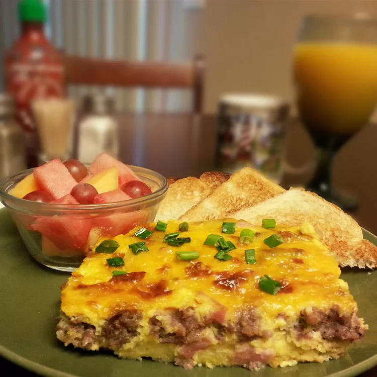

Egg Casserole

Description
I have been making this egg casserole for 13 years, primarily for Christmas brunch gatherings. It includes eggs, bread, cheese and sausage. It also works great with bacon.
Ingredients
- 12 eggs, beaten
- 1 ½ pounds ground breakfast sausage
- 16 ounces shredded Cheddar cheese, divided
- 7 slices white bread, torn into pieces
Steps
- Preheat oven to 350 degrees F (175 degrees C).
- Brown sausage in a large skillet over medium-high heat. Drain off grease, and set aside to cool. Pour the eggs into a lightly greased 9x13 inch baking dish.
- In a separate large bowl, combine the sausage, bread and 12 ounces of the cheese. Mix well and pour this into the egg mixture. Top with the remaining 4 ounces of cheese and cover with foil.
- Bake at 350 degrees F (175 degrees C) for 15 minutes, uncover, and bake until casserole is golden brown and bubbly.